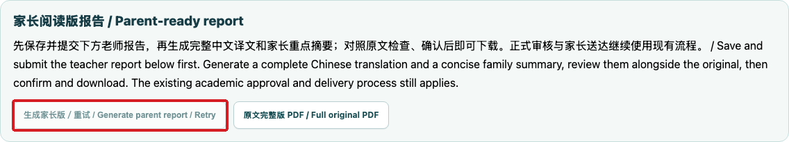
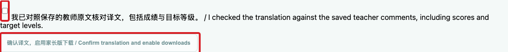

Prepare and download complete parent reports
老师与学业管理者 / Teachers and academic managers
使用方法 / How to use按编号逐步操作，红框标出本步操作位置；页面或权限不一致时停止并联系主管。
Follow each numbered step. Red boxes identify the relevant control. If the page or access differs, stop and contact your manager.
从教师端打开 Midterm Reports 或 Final Reports，选择正确学生及报告。先完成英文教师评语，核对学生、课程、学习情况及已有分数。
Open Midterm Reports or Final Reports in the teacher portal. Select the correct student and report. Complete the original teacher comments and check the student, course and existing scores.

在报告底部点击 Save, submit and generate parent report。系统依据本次保存的内容生成中文译文和家长重点摘要；请等待完成。
At the bottom, select Save, submit and generate parent report. The system prepares a Chinese translation and a short parent summary for the saved version. Wait until it is ready.
对照老师原文检查完整译文、成绩、现有水平和目标等级。检查无误后勾选确认框，再点击 Confirm translation and enable downloads。
Compare the complete translation with the teacher’s original, including scores, current level and target. Tick the confirmation box and select Confirm translation and enable downloads.

根据家长需要选择中英对照、中文或原文完整版 PDF。正式学业审核及向家长分享仍按现有流程进行。修改老师原文后，须重新生成和核对。
Download the bilingual, Chinese or complete original PDF. Follow the existing academic approval and parent-sharing process. If the original changes, generate and review the updated version.
生成失败时稍后重试；原文完整版仍可下载。若学生、数据、译文或按钮不对，暂停交付并联系主管，不自行猜测。
If generation fails, retry later; the complete original remains available. If the student, content, translation or button is wrong, stop delivery and contact the manager.